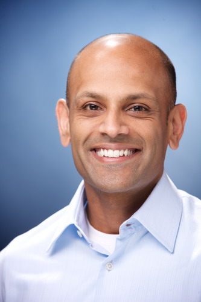
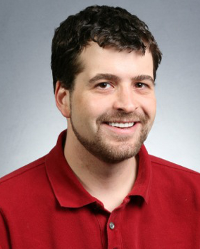

<!DOCTYPE html PUBLIC "-//W3C//DTD XHTML 1.0 Transitional//EN" "http://www.w3.org/TR/xhtml1/DTD/xhtml1-transitional.dtd">
TBD


<!--
<html xmlns="http://www.w3.org/1999/xhtml" xml:lang="en" lang="en">

<head>


  <meta http-equiv="Content-Type" content="text/html; charset=iso-8859-1" />

  <title>VLDB2013 - Keynotes</title>


  <link rel="stylesheet" href="vldb2012.css" />
   
  <style type="text/css">

  -->
<!--
.style3 {
	font-size: 14pt;
	color: #FFFFFF;
}
.style8 {font-size: 18pt}
-->


<!--
  </style>
</head>
</html>
<html xmlns="http://www.w3.org/1999/xhtml" xml:lang="en" lang="en">
<body style="background-color: rgb(255, 255, 255); font-family: arial; font-size: 10pt;">

<table cellspacing=0 cellpadding=0 border=0 width="100%" >
<tr><td align="center">
<table style="width: 1040px; height: 800px;" cellpadding="0" cellspacing="0" border=0>


  <tbody>


    <tr style="height: 151px;">


      <td width="100%" align="left">


<table width="1040" height="120" border="0" align="left" cellpadding="0" cellspacing="0" bordercolor="#CCCCCC">

<tr>
		

<td  align="center" valign="middle" colspan=2> </td>
</tr>
<tr>
<td width="280"></td><td valign="bottom"><hr /></td>
</tr>
</table>

-->


<!-- end header !-->

<!--
</td>
    </tr>


    <tr	valign="top">


      <td>

      <table style="width: 100%; height: 100%;" cellpadding="1" cellspacing="0" border=0>


        <tbody>


          <tr valign="top">
-->
<!-- start side panel !-->

<!--
<td style="width: 27%;">
<div id="sidebar">
<h2>General Information</h2>
<ul><li><a href="index.html">Conference Overview</a></li>
<li><a href="conference_officers.html">Conference Officers</a></li>
<li><a href="review_board.html">PVLDB Review Board</a></li>
<li><a href="industrial_track_committee.html">Industrial Track Committee</a></li>
<li><a href="reproducibility_committee.html">Reproducibility Committee</a></li>
</ul>

<h2>Program</h2>
<ul>
<li><a href="http://db.disi.unitn.eu/pages/VLDBProgram">Detailed Program </a></li>
<li><a href="keynotes.html">Keynotes </a></li>
<li><a href="tutorials.html">Tutorials </a></li>
<li><a href="workshops.html">Workshops </a></li>
<li><a href="social_events.html">Social Events </a></li>

</ul>
<h2>Participant Information</h2>
<ul>
<li><a href="registration.html">Registration</a></li>
<li><a href="conference_venue.html">Conference Venue </a></li>
<li><a href="http://www.rivatour.it/fiere-eventi-en/?IDSelect=10">Accommodation </a></li>
<li><a href="travel_information.html">Travel Information</a></li>
<li><a href="visa_requirements.html">Visa Requirements</a></li>
<li><a href="area_attractions.html">Area Attractions</a></li>
<li><a href="grants.html">Travel Grants</a></li>
</ul>

<h2>Calls</h2>
<ul>
<li>Papers 
<ul>
	<li><a href="research_track.html">Research Track</a></li>
	<li><a href="experiments_analysis.html">Experiments and Analysis Track</a></li>
	<li><a href="industrial_track.html">Industrial Track </a></li>
	<li><a href="phd_workshop.html">PhD Workshop</a></li>
</ul>
<li><a href="call_demonstrations.html">Demonstrations</a></li> 
<li><a href="call_tutorials.html">Tutorials</a></li> 
<li><a href="call_panels.html">Panels</a></li> 
<li><a href="call_workshops.html">Workshops</a></li>
<li><a href="call_nominations.html">Nominations</a></li>
</ul>

<h2>Dates and Guidelines </h2>
<ul>
<li><a href="important_dates.html">Important Dates</a></li>
<li><a href="formatting_guidelines.html">Formatting Guidelines</a></li>
</ul>


<h2>Local Organization</h2>
<ul>
<li><a href="http://db.disi.unitn.eu/"></a>
<p><a href="http://www.unitn.it"></a>
</ul>
</div>


-->
<!-- end side panel !-->

<!--
    </td>


                    <td style="border-left: 1px solid #CCCCCC; width: 100%; height: 100%" valign="top"><table border="0" width="100%" height="100%" id="table1">
				        <tr>
				          <td align="left" valign="top">
				          
				          <div class="title">Keynotes</div> 
				          <div id="main">
				           <p>
				            <table>
				           <tr>
				           <td>
<div class="title2">
Data Infrastructure at Web Scale
</div>
<i>Jay Parikh, VP of Infrastructure Engineering, Facebook </i>
</td></tr>
<tr><td>
<p>
<b>keynote slides<br>
keynote <a href="https://www.vldb.org/2013/video/keynote1.flv">video</a></b>
<p><b>Abstract</b>:
Nearly every team at Facebook depends on the company's custom-built data infrastructure for warehousing and analytics, with roughly 1,000 people across the company -technical and non-technical- using these technologies every day. Given Facebook's unique scalability challenges (their data warehouse is more than 250 PB in size, they add 600 TB of new data every day) and processing needs (they crunch more than 10 PB of data a day), the company's data infrastructure team has to ensure that its systems are prepared to handle not just today's challenges, but tomorrow's as well. In this session, Facebook's Jay Parikh will provide an overview of the company's data infrastructure, focusing on the custom-built technologies they've developed -including Corona, Presto, Morse, and Giraph- to meet the scale challenges they face. 
<p><b>Bio</b>:
Jay Parikh is the VP of infrastructure engineering at Facebook. In that role, he leads the engineering and operations teams responsible for building and maintaining an infrastructure that serves more than a billion users, developers, and partners worldwide. Prior to Facebook, Jay was senior vice president of engineering and operations at Ning, where he oversaw the scaling of the company’s social networking platform from 50,000 social networks to more than 1.5 million social networks. Before Ning, Jay was the vice president of engineering at Akamai Technologies, where he helped build the world’s largest and most globally distributed computing platform.
</td></tr>
</table>
<p>			       <table>
				           <tr>
				           <td align=left>
<div class="title2">The DataHub:  A Collaborative Data Analytics and Visualization
Platform </div>
<i>Samuel Madden, Professor of Electrical Engineering and Computer
Science in MIT's Computer Science and Artificial Intelligence
Laboratory</i>
</td></tr>
<tr><td align=left><div id="main">
<p>
<b>keynote <a href="https://www.vldb.org/2013/download_file/Vldb2013-Keynote-SamMadden.zip">slides</a><br>
keynote <a href="https://www.vldb.org/2013/video/keynote2.flv">video</a></b>
<p><b>Abstract</b>:
In this talk, I will describe a new system we are building at MIT, called DataHub. DataHub is a hosted interactive data processing, sharing, and visualization system for large-scale data analytics. Key features of DataHub include: (i) Flexible ingest and data cleaning tools to help massage data into a form that users can write programs that operate on it. This includes both removing irregularity as well as exposing structure from unstructured data such as text files and images. (ii) A scalable, parallel, SQL-based analytic data processing engine optimized for extremely low-latency operation on large data sets, by exploiting massive parallelism available in modern GPUs and upcoming “manycore” CPUs. (iii) An interactive visualization system that is tightly coupled to the data processing and lineage engine. Specifically, DataHub provides a workflow-based visualization engine where users can choose from a library of pre-built visualizations, or define their own visualizations via a simple API. Analysis and visualization steps may run on either CPUs or manycore/GPU devices. (iv) Finally, Datahub is a hosted data platform, designed to eliminate the need for users to manage their own database. It includes features that allow users to selectively share their data with other users, using complex context-sensitive predicates (e.g., that data about particular times or location should be visible to particular users). 
<p><b>Bio</b>:

Samuel Madden is a Professor of Electrical Engineering and Computer
Science in MIT's Computer Science and Artificial Intelligence
Laboratory. His research interests include databases, distributed
computing, and networking. Research projects include the C-Store
column-oriented database system, the CarTel mobile sensor network
system, and the Relational Cloud "database-as-a-service". Madden is a
leader in the emerging field of "Big Data", heading the Intel Science
and Technology Center (ISTC) for Big Data, a multi-university
collaboration on developing new tools for processing massive quantities
of data. He also leads BigData@CSAIL, an industry-backed initiative to
unite researchers at MIT and leaders from industry to investigate the
issues related to systems and algorithms for data that is high rate,
massive, or very complex.

Madden received his Ph.D. from the University of California at Berkeley
in 2003 where he worked on the TinyDB system for data collection from
sensor networks. Madden was named one of Technology Review's Top 35
Under 35 in 2005, and is the recipient of several awards, including an
NSF CAREER Award in 2004, a Sloan Foundation Fellowship in 2007, best
paper awards in VLDB 2004 and 2007, MobiCom 2006,  CIDR 2013,  EuroSys
2013, and a SIGMOD Test of Time Award for his 2003 paper "The Design of
an Acquisitional Query Processor for Sensor Networks." </div></td></tr>
</table>				        

				           <p>
				           <table>
				           <tr>
				           <td>
<div class="title2">Privacy-Preserving Data Analysis: From Fallacious to Felicitous ... and to Fruition</div>
<i>Cynthia Dwork, Distinguished Scientist at Microsoft Research</i>
</td></tr>
<tr><td>
<p>
<b>keynote <a href="https://www.vldb.org/2013/download_file/Vldb2013-Keynote-CynthiaDwork.zip">slides</a><br>
keynote <a href="https://www.vldb.org/2013/video/keynote3.flv">video</a></b>
<p><b>Abstract</b>:
Privacy-preserving data analysis, also known as statistical disclosure control, has a large literature that spans several disciplines.  Many early attempts have proved problematic either in practice or on paper. A new approach, based on the definitional concept of "differential privacy," has provided a theoretically sound and powerful framework that has given rise to an explosion of research.  This talk motivates and explains the definition of differential privacy, describes some basic techniques for achieving it, and discusses some of the technical and cultural obstacles to bringing this approach to fruition.
<p><b>Bio</b>:
Cynthia Dwork, Distinguished Scientist at Microsoft Research, is renowned for placing privacy-preserving data analysis on a mathematically rigorous foundation.  A cornerstone of this work is differential privacy, a strong privacy guarantee frequently permitting highly accurate data analysis.  Dr. Dwork has also made seminal contributions in cryptography and distributed computing, and is a recipient of the Edsger W. Dijkstra Prize, recognizing some of her earliest work establishing the pillars on which every fault-tolerant system has been built for decades.  She is a member of the US National Academy of Engineering and a Fellow of the American Academy of Arts and Sciences.
</td></tr>
</table>				        
			               </td>
				        </tr>
			            </table>
			       <p>
-->
				      <!--end of mainbody-->
 


 <!--           
			<p> <br />
            </p>            </td>
			<td style="width: 1%; background:url(https://www.vldb.org/2013/images/bg_right.gif)"></td>
          </tr>
        </tbody>
      </table>      </td>
    </tr>


-->
<!--footer-->


<!--  
       <tr>
	<td class="linkfooterbar" width="100%" align="center" bgcolor="#7d1a14">


<div id="textbar">&copy; VLDB 2013</div>


-->
<!--  	<a href="" target="_blank" >Email Registration</a> |
	  <a href="" target="_blank" >Email Webmaster</a> |
	  <a href="" target="_blank" >Email Committees</a> |
	<a href="http://www.unitn.it" target="_blank"   >UNITN Home</a> | 
       <a href="http://disi.unitn.it/" target="_blank"  >DISI</a></td>-->


<!--
</tr>

<tr> 
    <td align="center">
      <table cellspacing=0 cellpadding=1 border=0 width=100% bordercolor="#077431">
	  <tr>
	  <td align="center" class="linkfooter">
       <p>

-->
       	<!--  Logo design by <a href="mailto:sakispalpanas@gmail.com">Sakis Palpanas</a>  -->      
        
<!--
        </p>        </td>
		</tr>
	  </table>    </td>
</tr>
  
  </tbody>
</table>
</td></tr></table>

</body>

</html>
